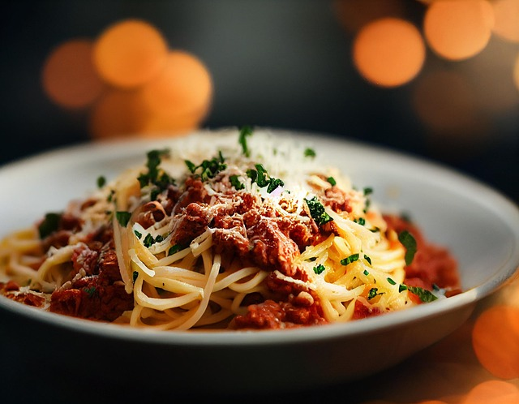

Vegane Spaghetti Bolognese

Image by HANSUAN FABREGAS from Pixabay
ich nutze es als stock
Beschreibung
Spaghetti Bolognese ist neben Pizza wohl das bekannteste Gericht Italiens.
Dazu ist es schnell zuzubereiten und einfach veganisierbar.
Lediglich das Hackfleisch und der Parmesan müssen ersetzt werden.
Zum Glück gibt es heutzutage überall sehr leckere Ersatzprodukte!
Zutaten
- Gewürze
- Salz
- Pfeffer
- Majoran
- Oregano
- Thymian
- Gemüsebrühe
- Vegane Creme Fraiche(nach Geschmack)
- Anderes
- Spaghetti
- Passierte Tomaten
- Veganes Hackfleisch
- Kirchtomaten
- Veganer Parmesan
- Basilikum
- Mehl
- Erhitzbares Öl (zB Raps)
Vorgehen
- Koche gesalzenes Wasser in einem Topf.
- Erhitze Öl in einer Pfanne.
- Setze in einem kleinen Topf eine Mehlschwitze an.
- Halbiere die Tomaten.
- Sobald das Wasser kocht gebe die Nudeln hinzu.
Rühre immer mal wieder um, sodass sie nicht anfangen zusammen zu kleben.
- Gib das vegane Hack in die Pfanne.
- Wenn die Mehlschwitze die gewünschte Bräune hat lösche sie mit den passierten Tomaten. Gut umrühren!
- Gebe die geschnittenen Tomaten in die Pfanne und brate sie mit dem Hackfleisch.
- Verfeinere die Soße mit Gewürzen und Creme Fraiche nach persönlichem Geschmack
und gieße sie in die Pfanne.
- Gieße die Nudeln ab.
(Wer mag kann die Nudeln nun in die Pfanne geben.)
- Gebe Nudeln und Soße auf einen Teller, vollende mit Basilikum und Parmesan.
Home